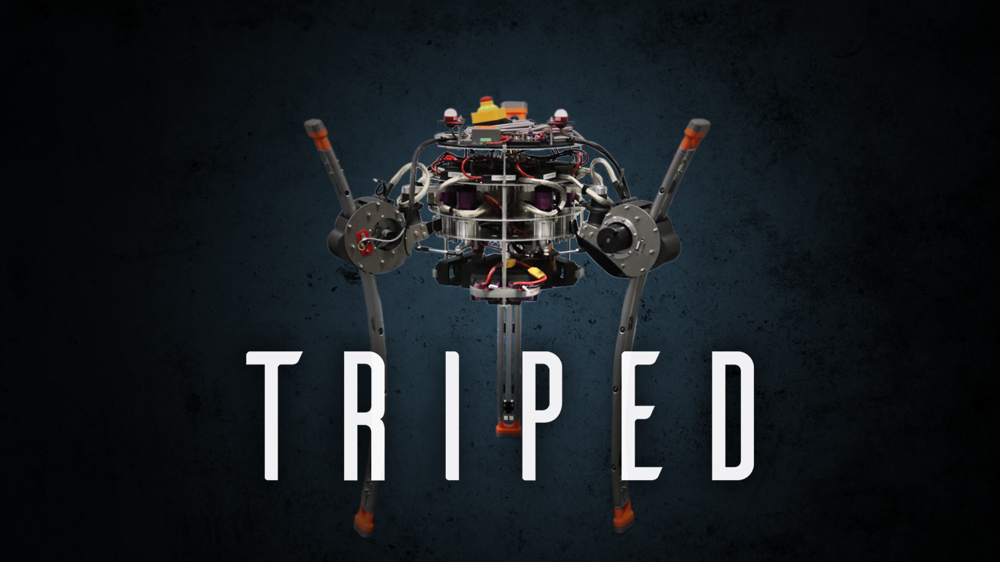

## Welcome to the TriPed Project
We are interested in the cooperation of humans and machinesm particularly how machines can help people walk.
For this purpose the [aries lab](https://www.lorenzomasia.com/lab-and-people) has developed a new system in cooperation with the University of Stuttgart.

This system consists of three independent, one-legged robots, which are connected by a common platform.
The goal is to investigate how several independent systems can walk together or even climb stairs. 
The findings will be used to develop and control "automatic crutches" that walk on their own while stabilising the user.


 
## Student involvment
The project, called TriPed, will start in the winter semester 2020/2021 and will be largely supported by students. 
Starting in the summer semester 2021, new theses, internships and seminars will be offered for this purpose.
Interested students can not only make their mark on the project, but also may be able to be part of a scientific publication.
